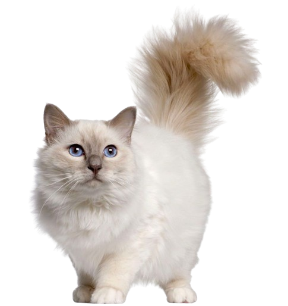

Skylar
5 years old
Female
5 Kilograms
Birman
Here is Skylar, the charming Birman cat who is eager to fill your house with love and warmth! Skylar is quite beautiful, with her gorgeous blue eyes and soft fur. She is prepared to become your loyal companion and is loving and gentle. Skylar is the ideal addition to your life. She is vaccinated, trained to use a litter box, and looking for a caring, permanent home. Make Skylar a valued member of your family right now by getting in touch with us at PAWS for Love!